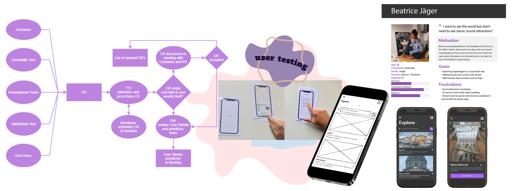

Be Dane

Description
During my Software Engineering class I worked in a group of 8 on the Be Dane project. The goal is to develop an App that enhances the authenticity and personalization of the tourism experience in Copenhagen. It focuses on connecting tourists with local guides or hosts who can offer tailored experiences based on the user's interests and preferences. We developed a two-sided platform for Explorers (tourists) and Hosts (local guides or hosts). Through interviews, observations, and technical investigations, we gained insights into user needs and preferences. This qualitative approach allowed us to understand pain points and motivations.
Design Process
Using tools like Adobe XD, Balsamiq, FlowMapp, and Photoshop, I designed user interfaces, wireframes, and information architecture. The focus was on creating intuitive and visually appealing layouts that enhance the overall user experience.
Usability Testing
We conducted usability testing sessions to gather feedback and refine the app's design iteratively. The challenge was to provide accurate recommendations for Explorers and enable Hosts to showcase their expertise. We implemented an algorithm that analyzed user preferences, location data, and feedback to match Explorers with suitable Hosts.
User-Centered Design
The BeDane App project exemplified user-centered design principles and technical investigations. By leveraging skills in user research, information architecture, UI design, and usability testing, we created a platform that caters to the needs of modern tourists seeking personalized experiences in Copenhagen.